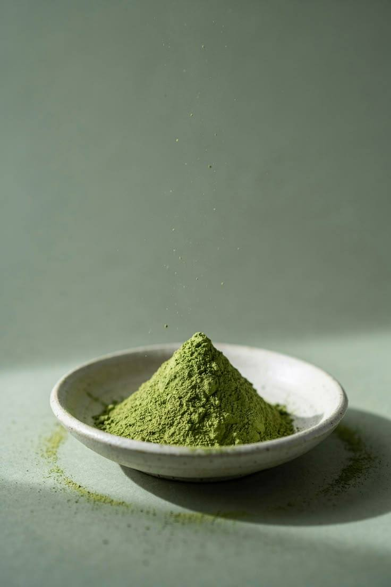
How to Start
How to make your first matcha correctly!
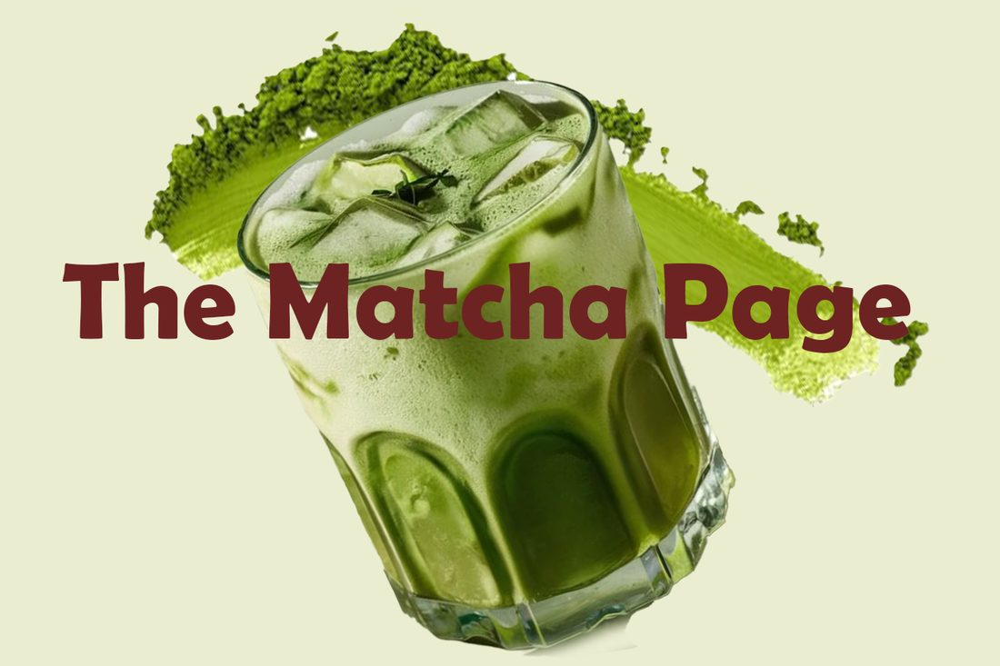
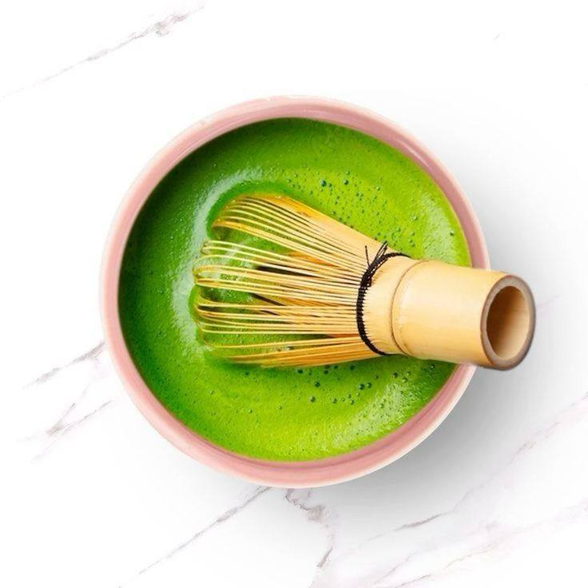
I started this page to educate more people about Matcha. As it is gaining in popularity quite fast, my concern that it will become just another drink grows. To the farmers who tirelessly hone their craft everyday, to the barista who whisk the Matcha carefully, I want to make people see the effort and love that creates every drink.
Want to learn more about Matcha?

How to make your first matcha correctly!
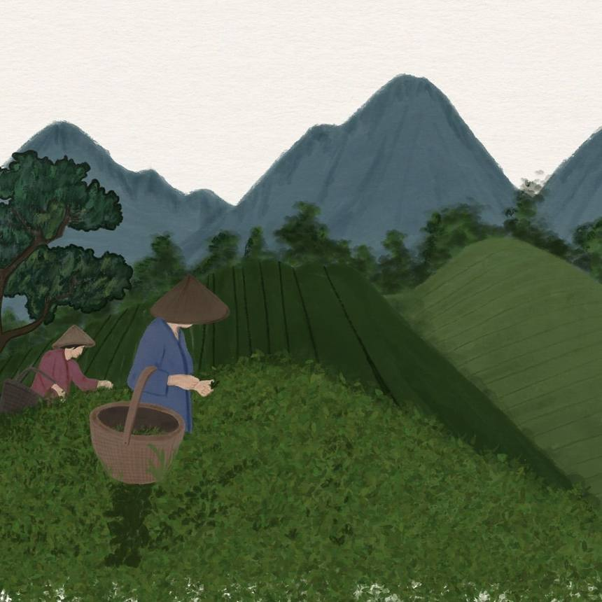
Did you know Matcha is made all around Japan?
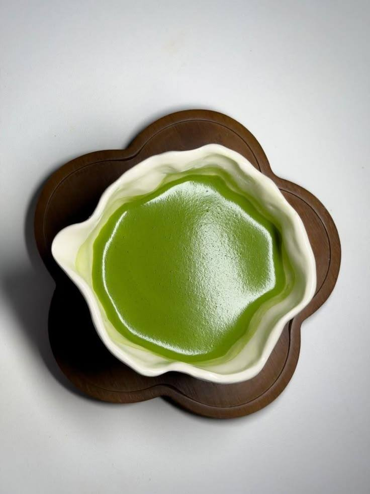
There are many different variations of Matcha.
I have been making Matcha for 2 years and can confidently tell you I was making it wrong, 90% of the time.
Here is my guide on how to make the perfect Matcha after many trial and errors.
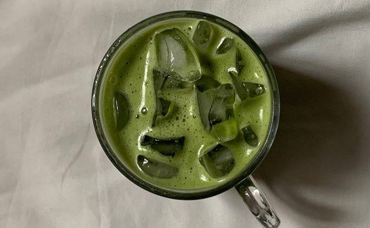
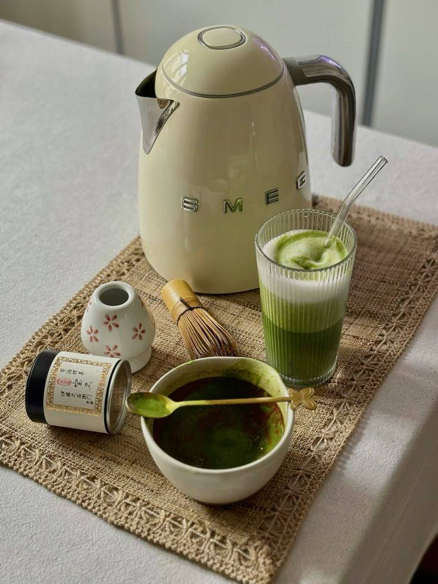
Grab your Whisk, bowl and Matcha of choice!
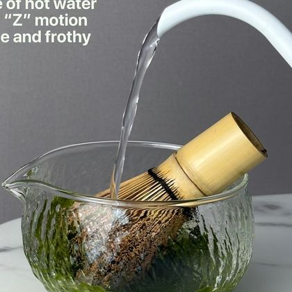
The water temperature is very important when making Matcha,
make sure it’s not too hot as it can burn the Matcha powder, and cold as the Matcha won’t whisk correctly.
Grab your whisk and add a teaspoon of water (Not too much!), start whisking in a W motion until your Matcha Powder has turned into a paste.
This step is essential for making a smooth Matcha.
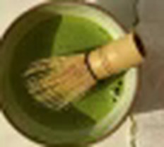
After making a paste make sure your hot water is still hot! Add around 60ml to your bowl, whisk your Matcha for 45 seconds to 1 minute straight. I would recommend a W or M motion as that creates the most microfoam.
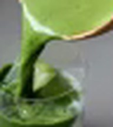
The last step is completely up to you, personally I prefer my Matcha cold with coconut milk! So if you need any recommendation definitely try that.
Add your milk of choice and enjoy!
The most common mistake I see is using too much water and milk.
Water, the goal isn’t to dilute the Matcha in step 2. It is to turn the Matcha into a liquid form meaning the more water you put in the less Matcha you will taste. Ensure you put just enough water so you can taste the Matcha!
Milk, this is a personal preference, and it is up to you how much milk you put with your Matcha. With that being said, I would recommend around 130 - 150ml if you want the Matcha to actually shine through.
Matcha Quality. Not everyone who has a Matcha business sells quality Matcha. The best sign to know you bought good quality Matcha is the colour. A vibrant green is a sign of an excellent quality Matcha and a dull yellowish green means the Matcha Quality is very poor, with that being said not every expensive Matcha is worth it, so please keep that in mind!
Did you know that Matcha tastes differently depending on what region in Japan it was made?
Most people do not know this as they view Matcha as a whole with one distinctive taste but in reality depending on where it was produced Matcha can be more creamy, more bitter, have more of an umami taste, so when people tell me “Matcha tastes like grass” it’s almost like an insult to tea workers who have carefully crafted their Matcha to have subtle hints of different flavours.
Uji is a city in Kyoto and one of the oldest tea-growing areas in Japan. Tea has been grown there for over 800 years. The river valley gets a lot of morning mist, which softens the sunlight in a similar way to the shades farmers put over their plants before harvest. The soil is also rich and drains well, which suits tea plants.
Uji matcha is usually described in three ways:
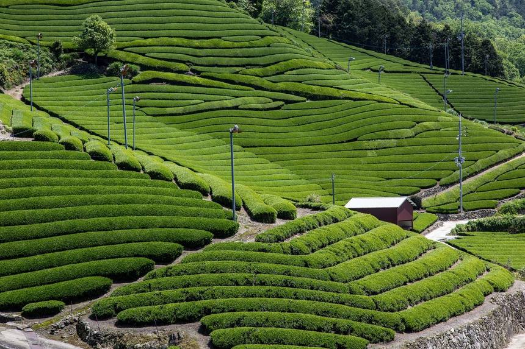
Nishio is a city in Aichi that is well known for matcha. The Yahagi river gives the area plenty of water and rich soil, and the climate is mild. According to Nishio Matcha, over 90% of the tea grown there is tencha, the leaf that matcha is made from, and the area makes about 20% of all the tencha in Japan. It isn't the biggest producer, but it focuses on quality instead of mass production.
Uji is known for complexity. Nishio is known for smoothness and colour.
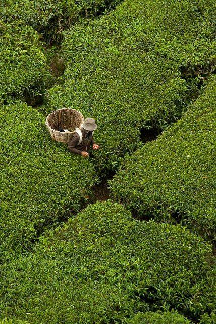
Tea here grows on the Shirasu plateau, a large area of volcanic ash left behind by eruptions thousands of years ago. The soil is naturally acidic, which tea plants like.
Sakurajima is one of Japan's most active volcanoes and sits across the bay from Kagoshima city. Its ash keeps adding minerals to the soil. That's a nuisance for daily life but good for farming.
Kagoshima is in the south of Japan, so it is warmer than Uji and Nishio. This means:
Kagoshima is now one of Japan's biggest tea-producing prefectures and has been competing with Shizuoka for the top spot. Its fields are flatter than the steep plots in Uji, which makes shade growing easier on a large scale. Farmers there also grow cultivars such as Saemidori, Asatsuyu and Okumidori alongside the more common Yabukita.
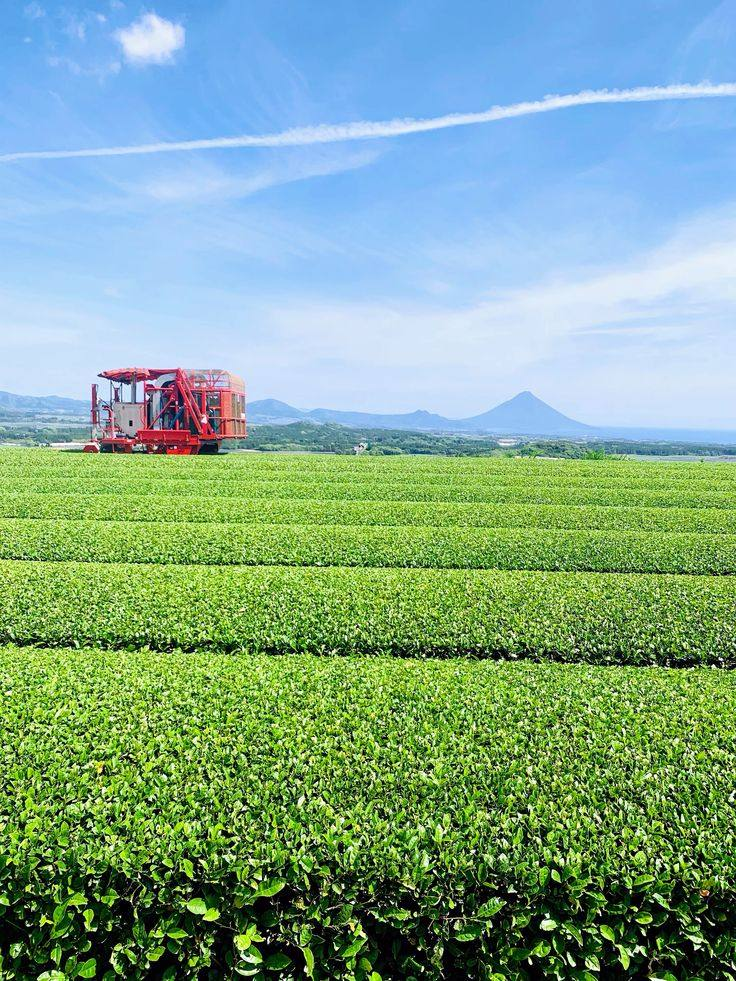
The most complex flavour, with strong umami and sweetness. Often the most expensive. Many people treat it as the benchmark for matcha. Best for drinking on its own.
Very bright green with a mellow, floral taste. Milder than Uji, and popular for baking and lattes.
A warmer climate and volcanic soil give a sweet, smooth matcha with plenty of umami. A good place to start if you are new to matcha.
I want to start this by saying there is no such thing as Ceremonial Grade Matcha, if you see it on a tin you are considering buying, run.
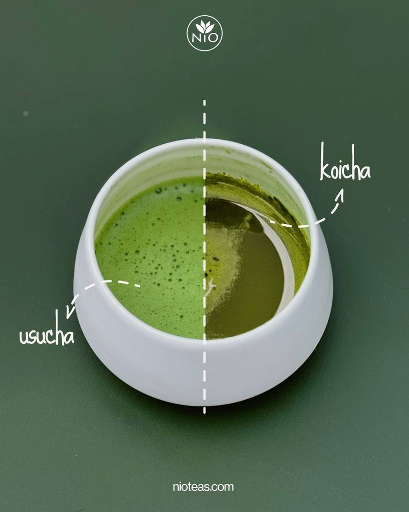
Usucha means “thin tea”. It is the style most people picture when they think of matcha: the powder is whisked with hot water until it is frothy. It comes from the Japanese tea ceremony, where it was served to guests with a set etiquette, long before anyone added milk or syrup. It is also the style served most often at tea ceremonies today.
Koicha, the thicker style, is explained below.
1.5 heaping tea ladles or 1 level teaspoon.
Pour boiling water into a teacup to cool it to 80°C, then pour into tea bowl.
Whisk vigorously 15 seconds, making an “M” shape.
Koicha means “thick tea”. It uses about twice as much powder as usucha in less water, so it ends up like a thin paste. You don't whisk it hard. You fold and knead it with the whisk instead.
Koicha is served at formal tea gatherings (chaji), usually after a meal and before the lighter usucha. It is made from tencha, often from older tea plants, and the bowl is shared between the guests.
There is a lot more matcha in each bowl, so the flavour is much stronger and sweeter, with very little bitterness when the matcha is good quality. It is meant to be sipped slowly, not drunk quickly like usucha.